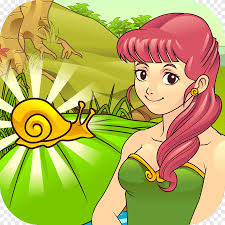

Pada zaman dahulu hiduplah dua orang putri dari sebuah kerajaan besar, yaitu Dewi Candra Kirana dan Dewi Galuh. Dewi Candra Kirana dikenal sebagai putri yang cantik, baik hati, dan disukai oleh banyak orang.
Suatu hari seorang pangeran bernama Raden Panji Asmoro Bangun datang untuk melamar Dewi Candra Kirana. Namun Dewi Galuh merasa iri dan tidak senang melihat kebahagiaan saudaranya.
Karena rasa iri tersebut, Dewi Galuh meminta bantuan seorang penyihir untuk mengutuk Dewi Candra Kirana. Akibat kutukan itu, sang putri berubah menjadi seekor keong emas dan dibuang ke sungai.
Keong emas tersebut kemudian ditemukan oleh seorang nenek yang tinggal di desa. Nenek itu membawanya pulang dan merawatnya dengan baik. Anehnya, setiap hari rumah nenek itu selalu menjadi rapi dan tersedia makanan lezat.
Suatu hari nenek itu mengintip dan melihat bahwa keong emas tersebut berubah menjadi seorang putri cantik, yaitu Dewi Candra Kirana. Nenek itu akhirnya mengetahui rahasia tersebut dan berjanji akan menjaga sang putri.
Sementara itu Raden Panji terus mencari kekasihnya yang hilang. Setelah perjalanan yang panjang, ia akhirnya menemukan Dewi Candra Kirana dan kutukan tersebut pun berakhir.
Akhirnya mereka kembali ke kerajaan dan hidup bahagia bersama.